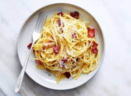

About Cabonara
Pasta carbonara is an indulgent yet surprisingly simple recipe. Made with pancetta (or bacon) and plenty of Parmesan, this recipe takes only 30 minutes to prepare from start to finish!
List of ingredients
- Pasta noodles of your choice
- 16 ounces ricotta cheese
- 2 egg yolk + 1 egg white
- 4 tablespoons chopped fresh parsley
Steps to take
- Put a large pot of salted water on to boil (1 tablespoon salt for every 2 quarts of water.)
- While the water is coming to a boil, heat the olive oil or butter in a large sauté pan over medium heat. Add the bacon or pancetta and cook slowly until crispy.
- In a small bowl, beat the eggs and mix in about half of the cheese.
- Once the water has reached a rolling boil, add the dry pasta, and cook, uncovered, at a rolling boil.
- When the pasta is al dente (still a little firm, not mushy), use tongs to move it to the bowl with the bacon and garlic. Let it be dripping wet. Reserve some of the pasta water.
- Toss everything to combine, allowing the pasta to cool just enough so that it doesn't make the eggs curdle when you mix them in. (That's the tricky part.)
Back to recipe book